Judul Foto
Deskripsi foto...
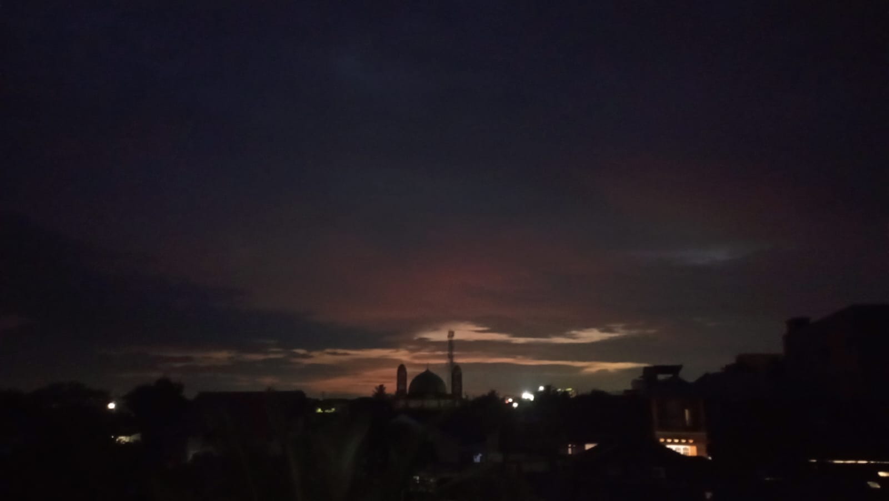
Saya sekarang adalah siswa universitas muhammadyah bengkulu yang sekarang sedang menjalani studi si bidang Sistem Informasi. saya bisa mengedit fidio, menggambar, menguasai microsoft office, dan tertarik mempelajari teknologi terkini.
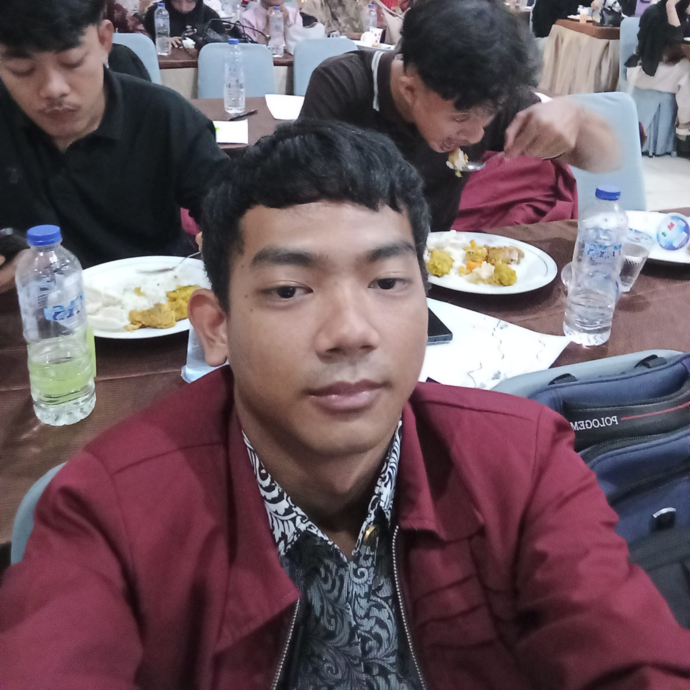
Mengenal latar belakang, perjalanan pendidikan, dan pengalaman magang yang telah saya tempuh.
Halo! saya adalah mahasiswa universitas muhammadyah Bengkulu yang berasal dari Rejang Lebong, Curup, Bengkulu. Saya memiliki ketertarikan dalam menggambar, musik, dan teknologi. sekaligus, menguasai Microsoft Office dan Design visual. dalam mengerjakan tugas saya, saya selalu mengedepankan tanggung jawab dan adaptibilitas terhadap tantangan yang datang.
Menempuh perguruan ringgi yang melatih kedisiplinan, kompetensi teknis dan akademis, penyelesaian proyek, dan meningkatkan iman dan taqwa kepada Allah SWT.
Menempuh pendidikan kejuruan yang melatih kompetensi teknis, kedisiplinan, profesionalitas kerja, serta penyelesaian proyek nyata dan program magang kerja industri.
Masa pengembangan potensi akademik, membangun dasar minat dalam seni menggambar, literasi, dan kolaborasi dalam kegiatan sekolah.
Pendidikan dasar yang menanamkan nilai-nilai kedisiplinan, budi pekerti, serta rasa ingin tahu yang tinggi dalam belajar.
Selama menjalani program Praktik Kerja Lapangan (Magang), saya mendapatkan kesempatan untuk menerapkan keterampilan langsung di lingkungan kerja profesional. Saya terlibat dalam penanganan tugas di lapangan serta berkoordinasi dengan staf pembimbing dan rekan kerja. Pengalaman ini membentuk etos kerja, ketelitian, dan kemampuan komunikasi yang solid.
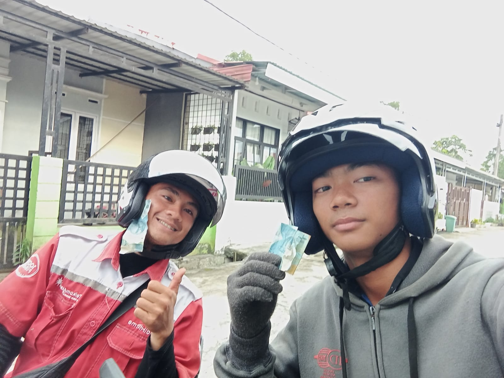
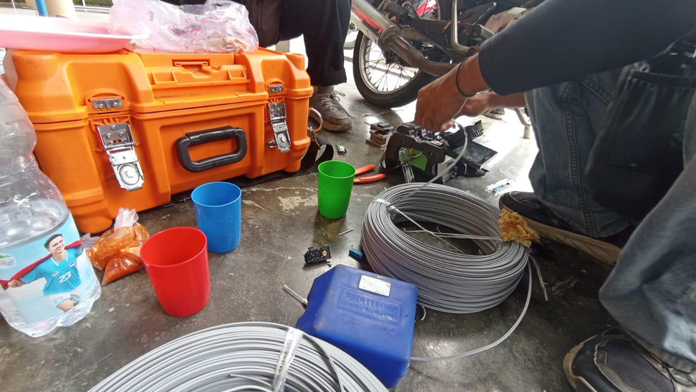
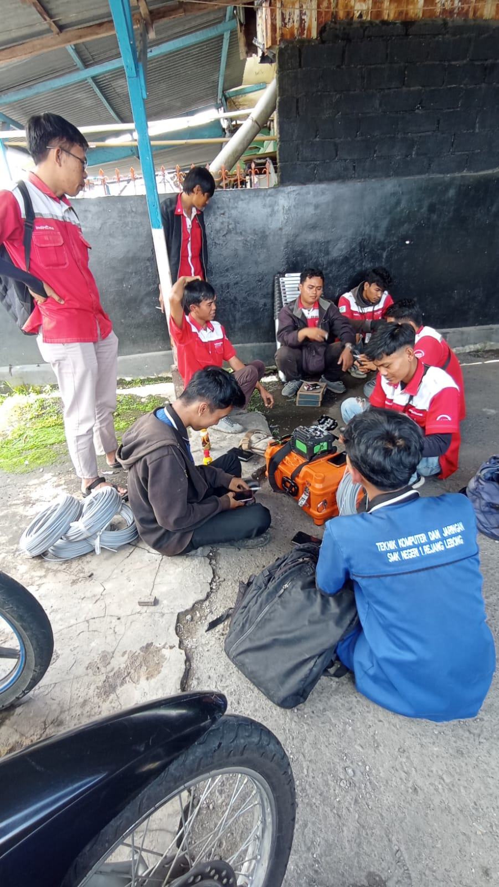
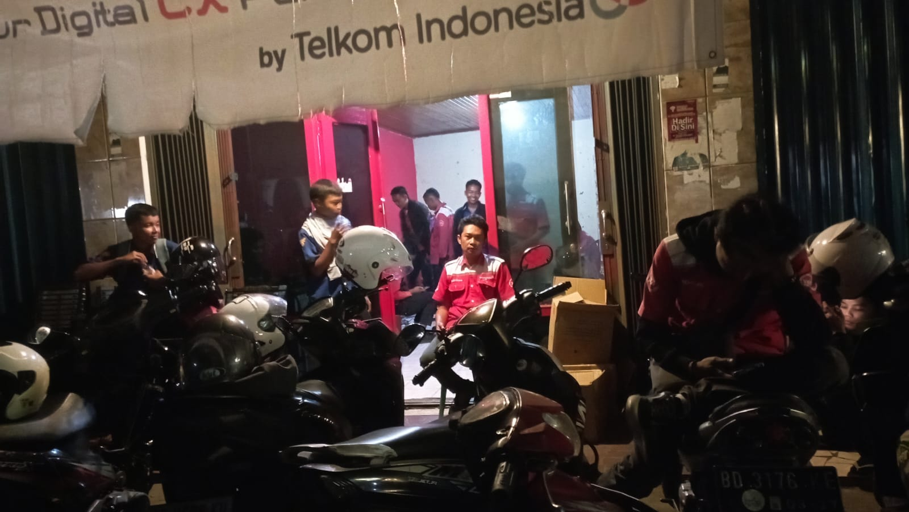
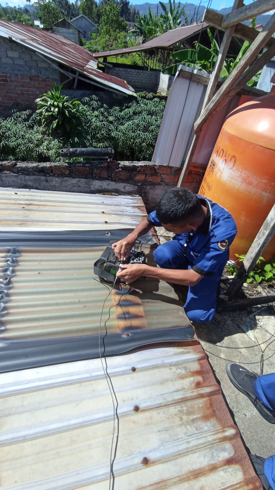
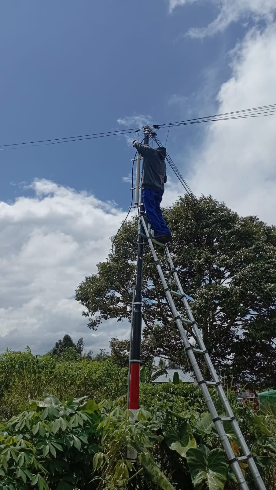
Kombinasi keahlian teknis administrasi, desain kreatif, video editing, dan seni ilustrasi digital yang saya kuasai secara mendalam.
Menguasai paket aplikasi perkantoran utama: Word (penyusunan dokumen formal, format skripsi/laporan, mail merge), Excel (rumus logika, tabel, visualisasi data grafik), dan PowerPoint (desain slide presentasi interaktif dan menarik).
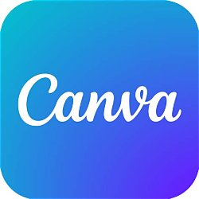
Mampu membuat berbagai materi visual komunikatif seperti poster, infografis, banner, thumbnail media sosial, feeds Instagram, dan template presentasi dengan komposisi warna dan tata letak yang estetis dan harmonis.
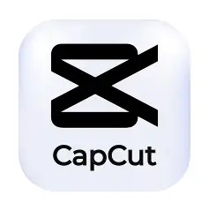
Mampu melakukan pemotongan video (cutting/trimming), sinkronisasi audio dan backsound musik, penambahan transisi halus, efek visual, teks/subtitel dinamis, serta pembuatan video pendek untuk TikTok, Reels, dan YouTube Shorts.
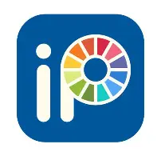
Menguasai teknik menggambar digital menggunakan Ibis Paint: pembuatan sketsa, lineart presisi, pewarnaan berlapis (layering), teknik pencahayaan dan bayangan (shading & highlights), serta eksplorasi beragam jenis kuas (brushes).
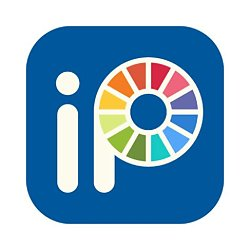
Galeri Karya Digital Art (Ibis Paint)Berikut adalah 6 panel karya gambar digital yang saya buat. Anda dapat mengganti foto-foto ini dengan karya asli Anda!
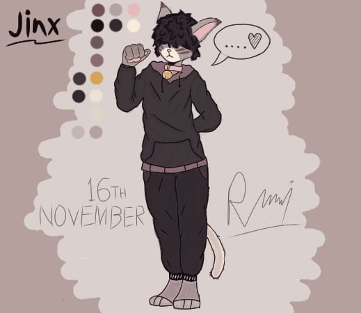
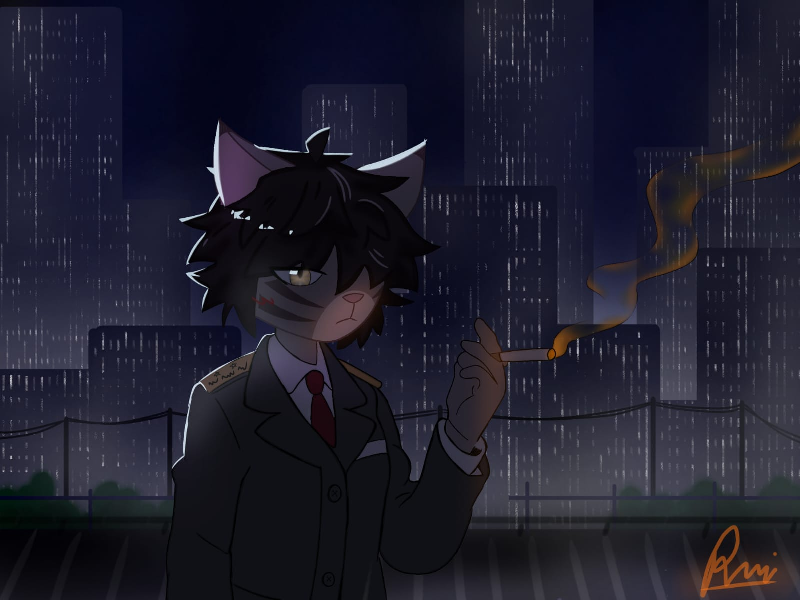
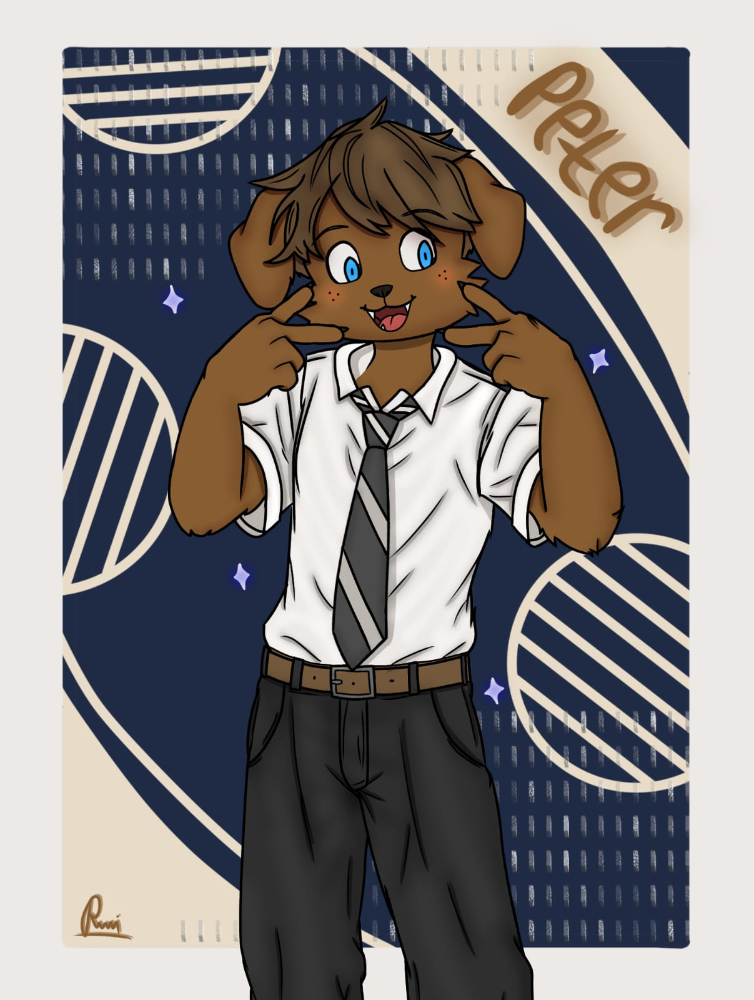
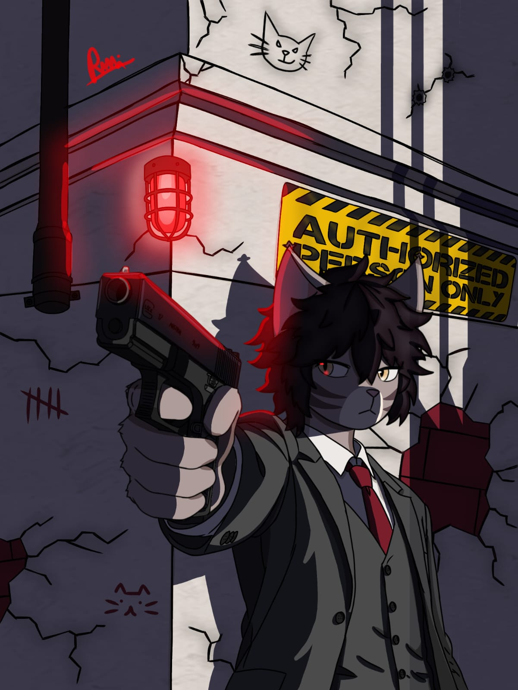
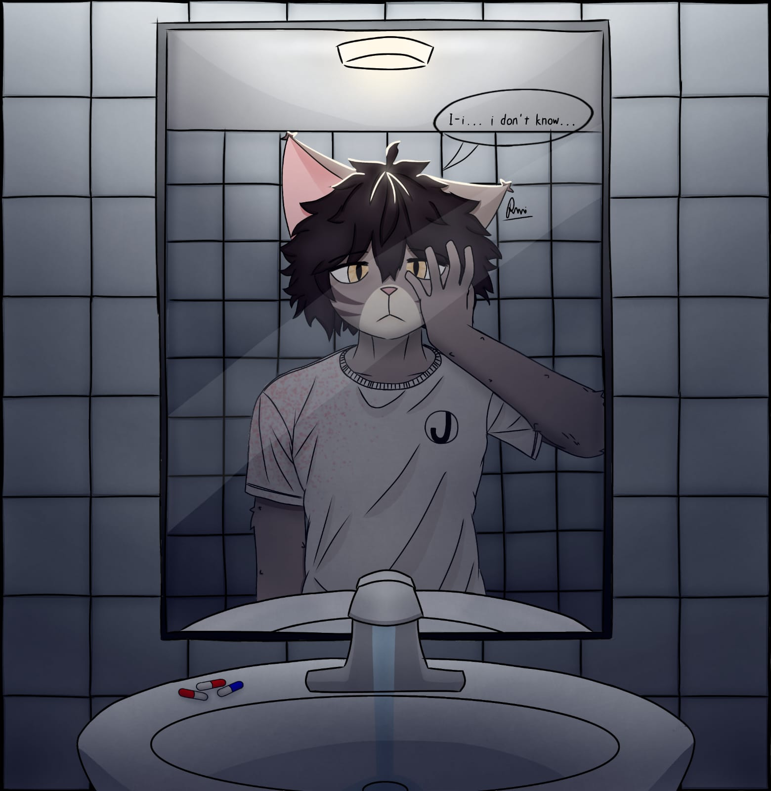
Berbagai aktivitas favorit dan kegemaran untuk mengisi waktu luang, menstimulasi imajinasi, memberikan inspirasi, serta juga menghibur.
Menggambar adalah salah satu media saya untuk mengekspresikan imajinasi dan ide kreatif ke dalam wujud visual. Saya sangat menikmati proses mulai dari coretan sketsa kasar, perbaikan garis, hingga eksperimen warna dan pencahayaan digital. sampai pada akhirnya gambarnya jadi dan enak di pandang.
Musik adalah sumber inspirasi dan penenang yang menemani saya saat berkarya maupun bersantai. Alunan musik instrumental, Lo-Fi, Pop, dan lagu-lagu berenergi membantu meningkatkan fokus, mood positif, dan ritme saat menggambar dan melakukan hal lain
Menikmati serunya dunia virtual Roblox bersama komunitas dan teman. Game favorit yang paling sering saya mainkan adalah game survival berlatar unik dan game petualangan menegangkan!
Di sela-sela rutinitas, saya meluangkan waktu untuk membaca buku, novel cerita, komik grafis, atau artikel-artikel. Membaca memperkaya kosa kata, membuka perspektif baru, dan menjadi referensi bagi karya-karya saya.
Jangan ragu untuk menghubungi saya untuk kolaborasi proyek kreatif, peluang magang/kerja, sekadar berdiskusi, atau hangout di vidio game!
Rejang Lebong, Curup, Bengkulu, Indonesia
Isi formulir di bawah ini dan saya akan merespons secepat mungkin.
Deskripsi foto...